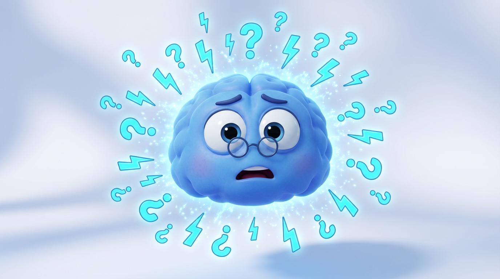
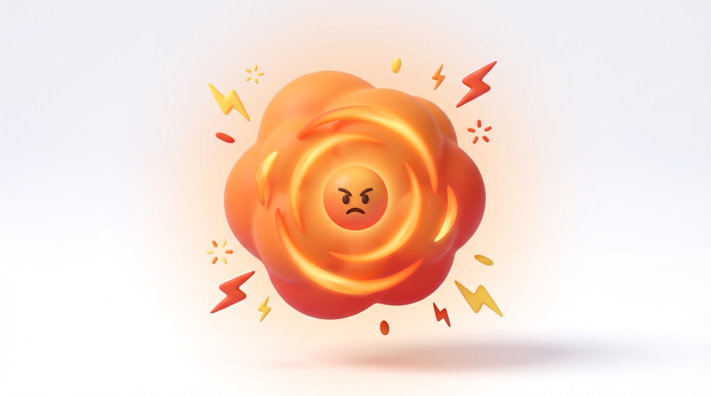
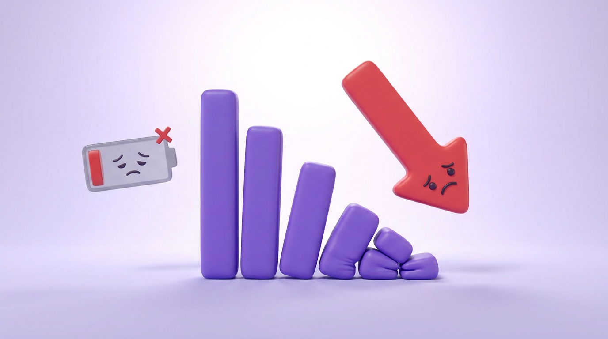
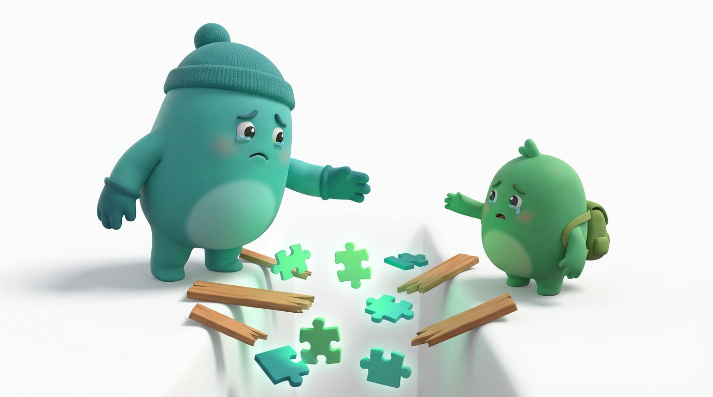
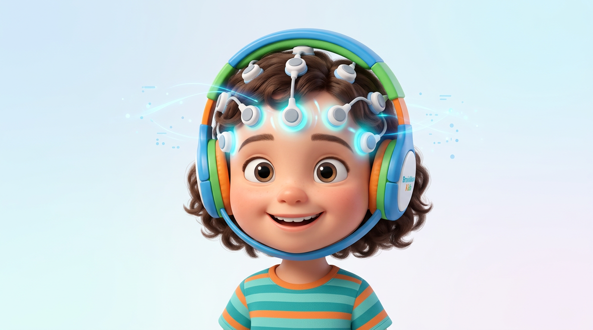
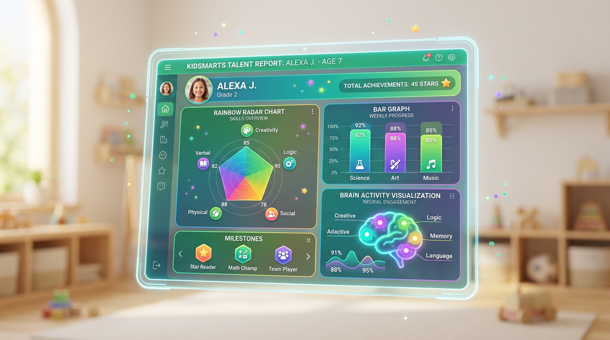
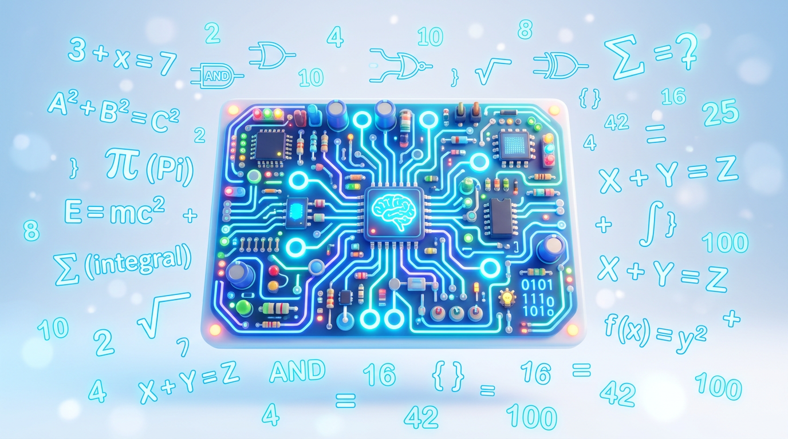
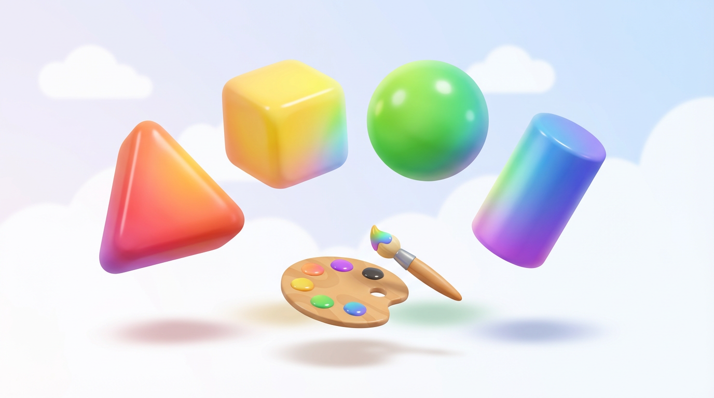
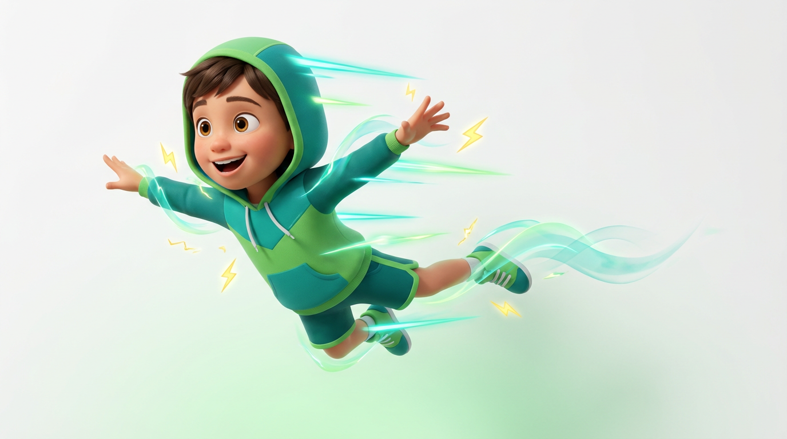
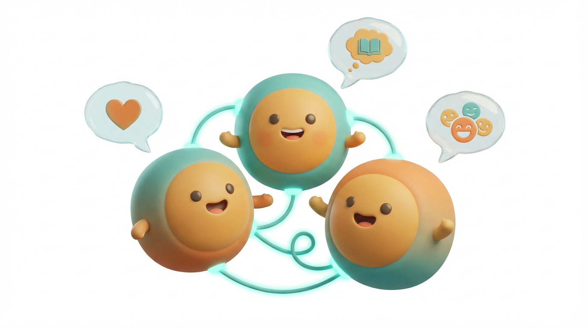

Child Brainwave Intelligence Lab
每個孩子的大腦都藏著獨一無二的頻率密碼。
透過 QEEG 腦波科技，精準解讀孩子的天賦潛能、學習類型與發展方向，
讓教育不再靠猜測，讓天賦不再被埋沒。
孩子的現實困境
許多孩子的潛能從未被正確發現，不是因為不夠聰明，而是因為從未找到屬於他的學習頻率。

SMR 波不足導致大腦無法維持穩定的專注狀態，孩子並不是「不想學」，而是大腦的注意力節律需要調整。

Beta 波過度活躍，孩子的情緒調節系統長期處於「過熱」狀態，容易爆發、難以冷靜，並非品格問題。

Alpha 波不足時，大腦無法在「放鬆-吸收」模式運作，導致學習效率低、興趣喪失，對知識缺乏熱情。
Theta 波過高時，孩子容易走神、活在幻想世界中，這不是懶惰，而是大腦創意天賦需要被正確引導。
孩子在哪些領域最有潛能？語言、邏輯、藝術還是運動？沒有腦波數據，所有選擇都只是隨機猜測。

父母與孩子的腦波頻率不同步，導致溝通無效、關係對立。腦波數據能幫助雙方找到共振頻率。
The Science Behind It
每個孩子的大腦都在不同頻率下運作，理解這些頻率，才能真正讀懂孩子的行為、情緒與天賦。

非侵入性的 QEEG 高精密傳感器輕鬆戴在頭部，全程安全舒適，適合兒童使用，採集時間僅需 3 分鐘。
運用專利演算法與專屬兒童天賦解碼模型，過濾雜訊，精準計算各頻段比率與特徵模式。

產出直觀的兒童大腦發展儀表板，量化天賦優勢、學習類型與發展建議，為家長提供科學育兒藍圖。
Talent Intelligence Mapping
根據哈佛大學霍華德·加德納博士的多元智能理論，結合腦波頻率特徵，精準定位孩子的優勢智能。
Theta 波與 Alpha 波協調良好，擅長閱讀、寫作與語言表達。

邏輯推理超強，擅長解題、分析模式與系統性思考。

對視覺藝術、空間想像有超常能力，創意思維活躍。

身體控制精準，反應速度快，運動、舞蹈領域卓越。
對音調、節奏有天生的敏銳度，學習樂器事半功倍。

同理心強、社交能力出色，天生懂得讀懂他人情緒。
對自然環境高度敏感，觀察力細膩，環境感知力天生。
善於內省與自我調節，是未來心靈成長的核心能力。
邏輯推理超強，擅長解題、分析模式與系統性思考。
對視覺藝術、空間想像有超常能力，創意思維活躍。
身體控制精準，反應速度快，運動、舞蹈領域卓越。
對音調、節奏有天生的敏銳度，學習樂器事半功倍。
同理心強、社交能力出色，天生懂得讀懂他人情緒。
對自然環境高度敏感，觀察力細膩，環境感知力天生。
善於內省與自我調節，是未來心靈成長的核心能力。
Development Applications
所有孩子用同樣方式學習，忽視個體腦波差異，優勢被掩蓋，劣勢被放大。
主觀判斷孩子的興趣與能力，容易因偏見而錯失真正的天賦方向。
ADHD、情緒問題等直接藥物介入，忽略了腦波調整的根本解法。
依據每個孩子獨特的腦波特徵，量身設計最適合的學習策略與節奏。
以腦波數據科學量化天賦維度，消除猜測，讓每個決定都有神經科學依據。
針對失衡頻段進行科學化神經反饋訓練，從根本改善注意力、情緒與學習能力。
Our Process
填寫孩子的基本資料與目前觀察到的學習及行為特徵，由專業顧問進行初步評估與建議。
孩子佩戴舒適的 QEEG 傳感器，在輕鬆環境中進行腦波採集。全程無痛、無侵入，孩子感受舒適。
專利 AI 演算法對腦波數據進行深度分析，識別各頻段特徵模式，對應八大天賦維度與發展建議。
專業顧問詳細解讀天賦發展報告，提供個性化學習策略、才藝方向建議及親子溝通指南。
Service Portfolio
從孩子個人天賦解碼到全家腦波共振，我們提供最完整的兒童神經科學服務。
Parent Stories
"我家小孩被老師說是問題學生，做完腦波解碼後才發現他的 Theta 波極高，是有天賦的創意型孩子。現在改用視覺化教學，成績進步了 40%！"
"孩子的 ADHD 一直靠藥物控制，但副作用讓我很擔心。透過腦波訓練調整 SMR 波後，專注力明顯改善，現在已經減少了藥量！"
"親子共振分析讓我明白為什麼我和女兒總是吵架。原來我們的溝通頻率完全不同！按照建議調整溝通方式後，關係改善非常多。"
Start Today
每個孩子都是獨一無二的。腦波解碼不是尋找完美，而是找到屬於他的那條最光明的路。